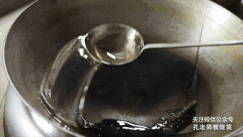
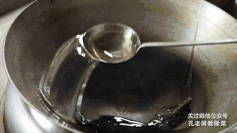
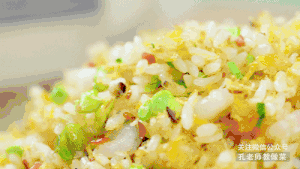
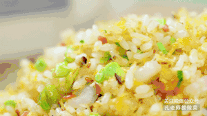

Things you Need
tools/Time
Main Ingredients
2 cup Thai rice 1.5 cup water 2 oz carrot 2 oz peas 5 oz char siu (You can use ham or spam if you can't get char siu.) 4 oz shrimp 2 egg 2 scallion Flavors 0.50 tsp salt 2 tbsp light soy sauce 2 tbsp oil Cooking Ingredients 2 cup water 1 tbsp oil 0.50 tsp salt大米用清水淘洗3-5次至水清。
米中加清水浸泡30分钟，然后倒入1：1.3的水量煮饭。
米中滴入几滴稻米油。（煮饭时加入几滴金龙鱼稻米油，米饭油润有光泽，颗粒感增强，粒粒分明不粘连）
煮好的米饭盛出冷凉备用。
准备配菜：香菇、火腿、熟鸡脯肉切碎末，笋子、海参切小丁。
切好的配菜放盘中备用。
虾仁中调入盐，蛋清抓匀，然后加入少许干淀粉抓匀。
蒸好的瑶柱剥去老边，用手搓丝备用。
锅中水烧开，倒入切配好的笋丁，青豆、香菇、海参焯水后备用。
取2个全蛋，3个蛋黄，加少许盐，划散成蛋液备用。
锅烧热，倒入多一些食用油，油锅烧至7成热，下入虾仁划散，沥油后捞出。
鸡蛋划散后倒入油锅中，边倒蛋液边用勺子搅拌。
勺子一定要不停地搅拌，直至蛋丝炸至金黄。
炸好的蛋丝滤油，用勺子轻轻按压，压出多余的油，使蛋丝蓬松干爽。
锅中留底油，倒入蛋丝、笋丁、青豆、香菇、海参，大火翻炒均匀。
调入盐，倒入冷却好的米饭，边打散边翻炒。
未完待续。。。
没填完。。


 



 
